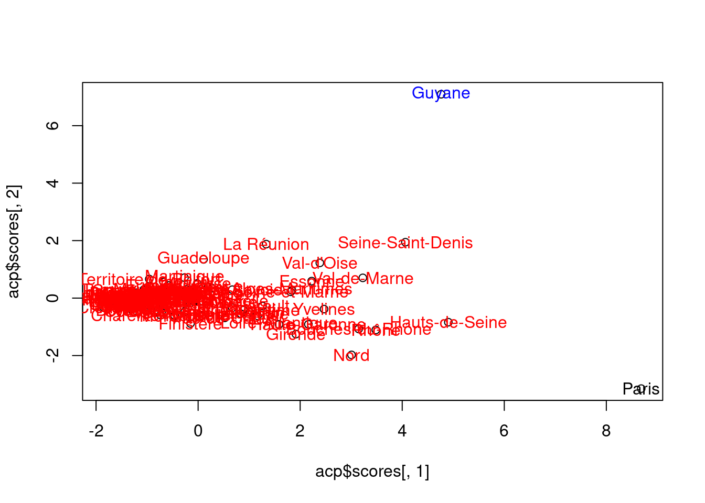
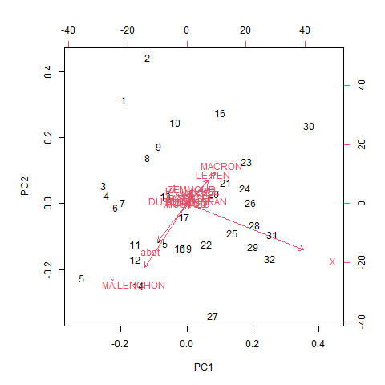
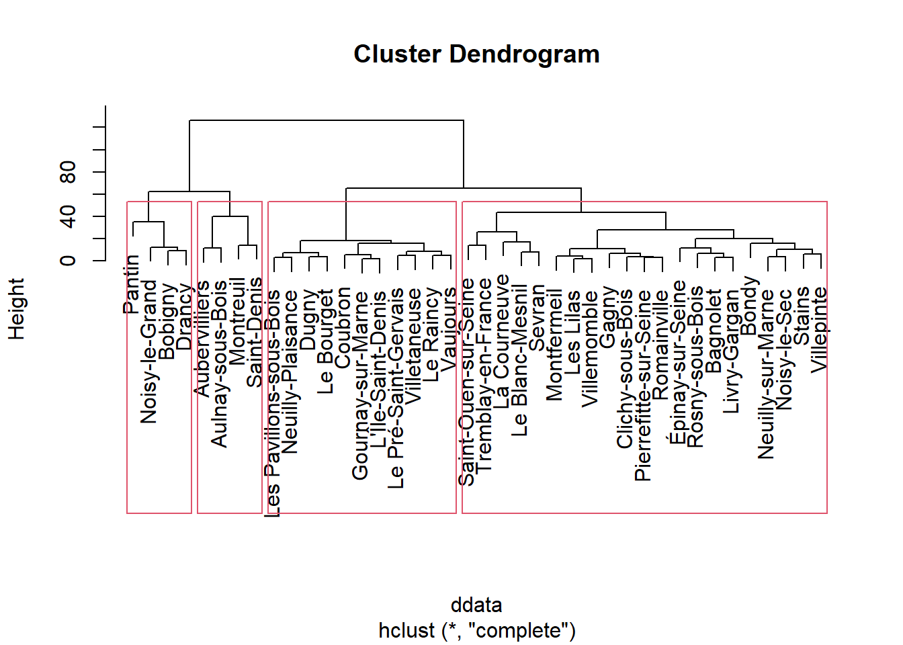
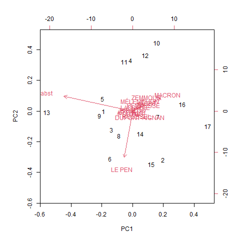
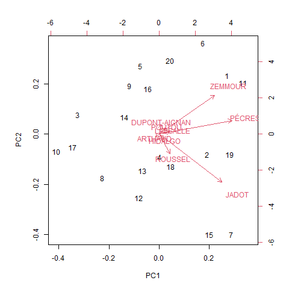
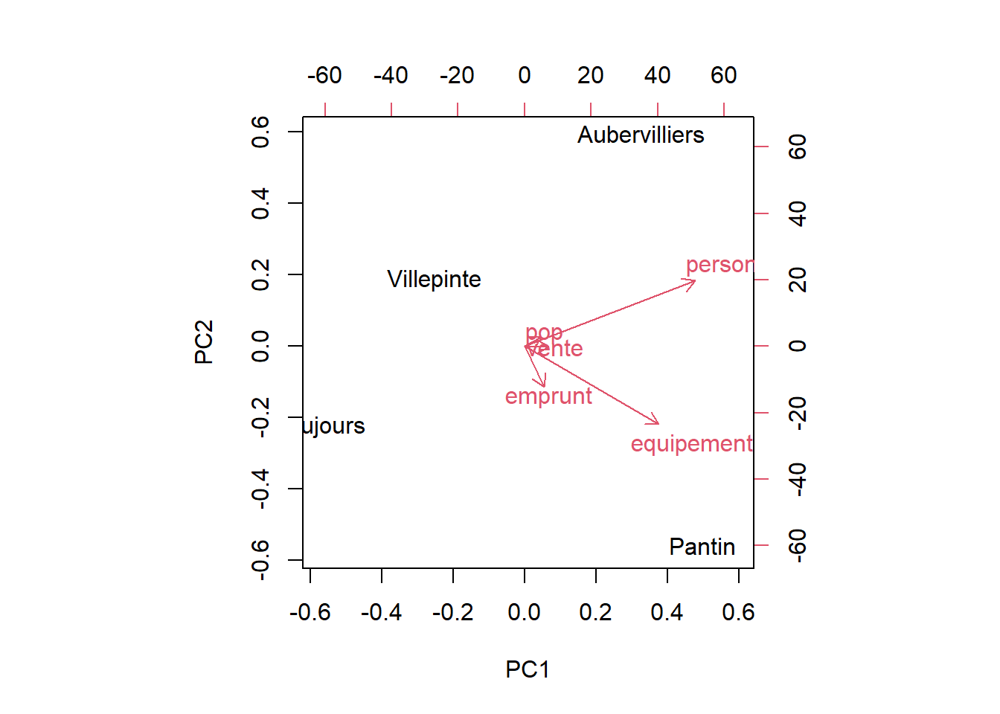
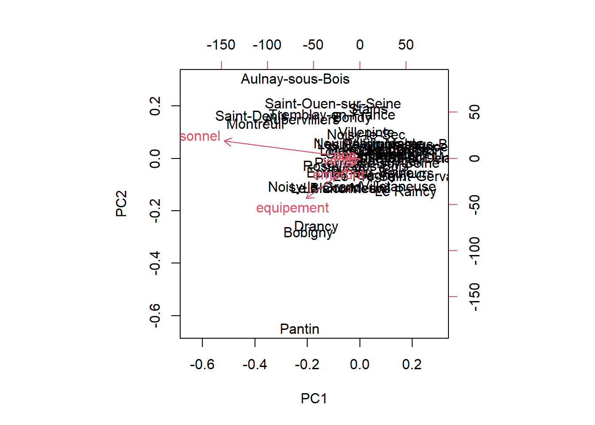
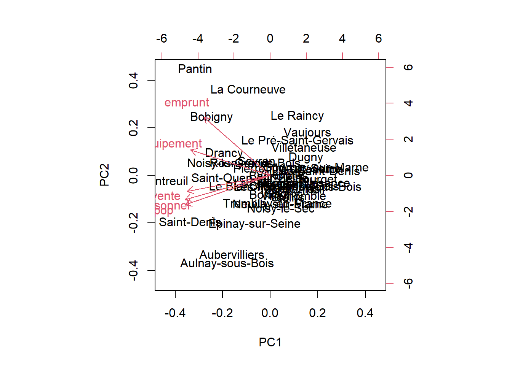
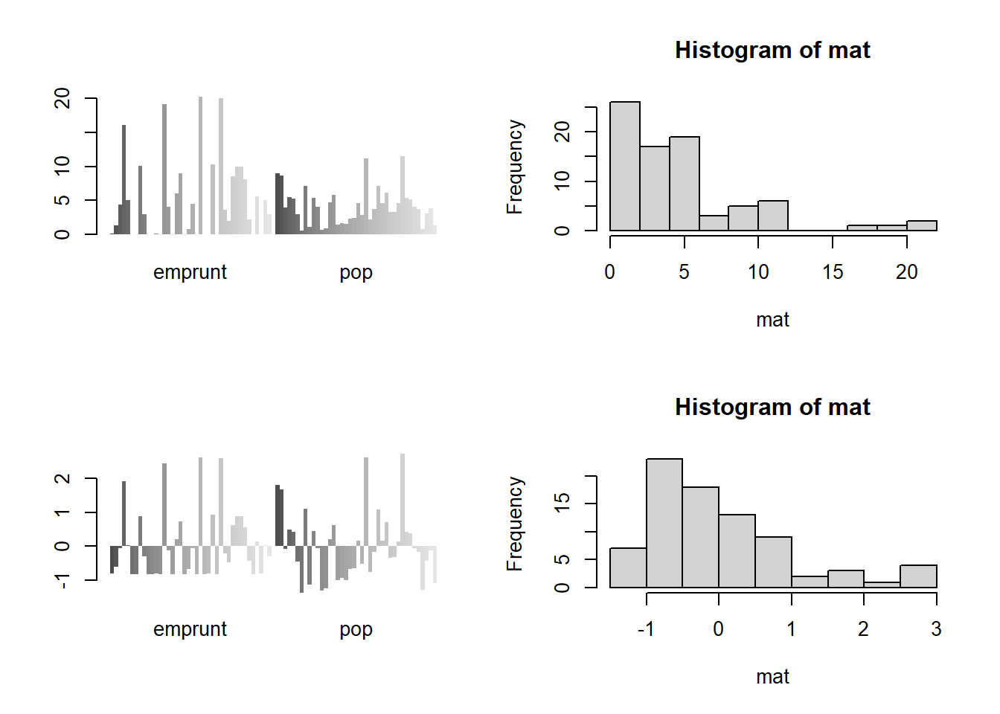

Multivariées : descriptif
## Linking to GEOS 3.12.1, GDAL 3.8.4, PROJ 9.3.1; sf_use_s2() is TRUELes analyses factorielles sont une démarche descriptive. Il s’agit de résumer de grands tableaux d’informations en passant des colonnes aux axes factoriels.
Attention, contrairement à la régression il ne s’agit pas d’expliquer mais de résumer.
1 Préparation de la donnée
On reprend la donnée construite pour la régression multiple
## vente personnel emprunt equipement pop
## Aubervilliers 8.922840 86.23647 0.07647707 28.68539 9.0259
## Aulnay-sous-Bois 11.969172 94.39636 1.27871516 21.21589 8.6522
## Bagnolet 4.606493 45.23602 4.40000000 17.85997 3.9493
## Bobigny 12.026500 71.44153 16.05282400 47.42069 5.5191
## Bondy 6.127473 51.13971 5.00000000 11.42274 5.3067
## Clichy-sous-Bois 1.793706 30.31320 0.00000000 13.83377 2.9806Il s’agit d’une matrice numérique.
2 Exploration de la donnée
Il s’agit de commandes à faire à chaque fois que l’on découvre une donnée
## vente personnel emprunt equipement
## Min. : 0.7324 Min. : 3.766 Min. : 0.000000 Min. : 0.9604
## 1st Qu.: 2.1699 1st Qu.: 20.409 1st Qu.: 0.007286 1st Qu.: 9.6207
## Median : 4.0436 Median : 39.584 Median : 3.000590 Median :13.6374
## Mean : 5.3179 Mean : 42.091 Mean : 4.801627 Mean :18.4521
## 3rd Qu.: 8.1072 3rd Qu.: 56.226 3rd Qu.: 8.198120 3rd Qu.:23.0387
## Max. :19.1979 Max. :122.243 Max. :20.226050 Max. :70.7883
## pop
## Min. : 0.5107
## 1st Qu.: 2.3076
## Median : 3.9146
## Mean : 4.1881
## 3rd Qu.: 5.3399
## Max. :11.4782## vente personnel emprunt equipement pop
## vente 1.0000000 0.8331551 0.5593201 0.7053665 0.8639097
## personnel 0.8331551 1.0000000 0.5320888 0.7178396 0.9688553
## emprunt 0.5593201 0.5320888 1.0000000 0.7133739 0.4884455
## equipement 0.7053665 0.7178396 0.7133739 1.0000000 0.7074864
## pop 0.8639097 0.9688553 0.4884455 0.7074864 1.0000000
3 ACP analyse en composante principale

## png
## 2
Deux graphiques superposés :
cercle des corrélations (les agrégats et la population)
nuage de points (les communes du 93)
On résume la donnée sur 2 axes seulement (PC1 et PC2)
Dans le cercle de corrélations :
longueur flèche (mauvaise / bonne représentation)
position - proche / opposée - orthogonale (= aucune relation)
4 Classification hiérarchique

Dendrogramme avec matérialisation des groupes

## Aubervilliers Aulnay-sous-Bois Montreuil
## 1 1 1
## Saint-Denis Bagnolet Bondy
## 1 2 2
## Clichy-sous-Bois Épinay-sur-Seine Gagny
## 2 2 2
## La Courneuve Le Blanc-Mesnil Les Lilas
## 2 2 2
## Livry-Gargan Montfermeil Neuilly-sur-Marne
## 2 2 2
## Noisy-le-Sec Pierrefitte-sur-Seine Romainville
## 2 2 2
## Rosny-sous-Bois Saint-Ouen-sur-Seine Sevran
## 2 2 2
## Stains Tremblay-en-France Villemomble
## 2 2 2
## Villepinte Bobigny Drancy
## 2 3 3
## Noisy-le-Grand Pantin Coubron
## 3 3 4
## Dugny Gournay-sur-Marne L'Île-Saint-Denis
## 4 4 4
## Le Bourget Le Pré-Saint-Gervais Le Raincy
## 4 4 4
## Les Pavillons-sous-Bois Neuilly-Plaisance Vaujours
## 4 4 4
## Villetaneuse
## 45 Quelques remarques autour de ces premiers résultats
5.1 Correspondance cercle de correlation et dendrogramme
# on filtre sur les communes de Pantin et d'Aulnay sous Bois
rownames(data)
sel <- data [c(2,28),]
# on transforme en matrice pour pouvoir faire un graphique de comparaison des répartitions
mat <- as.matrix(sel)
png("img/lafleche.png")
barplot(mat, las = 2, beside = T, col = terrain.colors(2), border = NA)
dev.off()


6 Deuxième approche de l’ACP, on filtre
Deux directions possibles :
on distingue petites et grandes villes
on zoome sur certaines villes
6.1 Les variables
On veut montrer uniquement les petites villes, celles dont la population est moindre

Et on reproduit le code jusqu’à l’ACP
## png
## 2
6.2 Les communes
On choisit une ville dans chacun des r4 groupes : Pantin, Aubervilliers, Vaujours et Villepinte
data <- read.csv("data/baseMultivarie.csv", row.names = 1)
sel <- data [row.names(data) %in% c("Pantin", "Aubervilliers", "Vaujours","Villepinte"),]
acp <- prcomp(sel)
biplot(acp)
6.3 Centrer et réduire
Centrer et réduire permet de comparer les variables dont les montants sont très différents.
Centrer : on compte les écarts à la moyenne
Réduire : on divise toutes les valeurs par l’écart type.
6.3.1 Comprendre l’option “scale.” dans la commande
Il faut faire varier l’option avec FALSE et TRUE.
Le FALSE permet d’obtenir uniquement les variables les plus importantes.

Le TRUE permet de pouvoir comparer toutes les variables

6.3.3 Au niveau des données
On peut également utiliser la fonction scale pour les données elles-mêmes
par(mfrow = c(2,2))
# transformation en matrice
mat <- as.matrix(data [, c("emprunt", "pop")])
# graphiques pour comparer les 2 variables par bureau de vote
barplot(mat, beside=T, border = NA)
hist(mat)
# on ne voit rien, il faut centrer réduire
mat <- scale(mat)
barplot(mat, beside = T, border = NA)
hist(mat)
L5GEABIM Analyses bivariées et multivariées